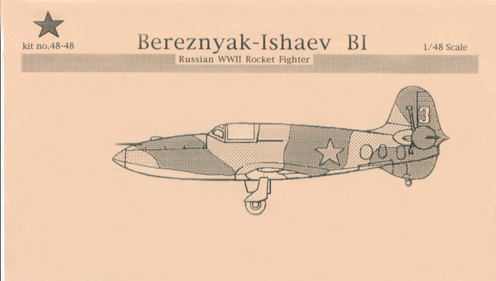
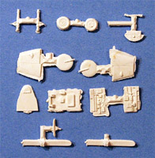
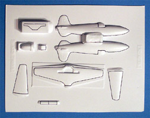
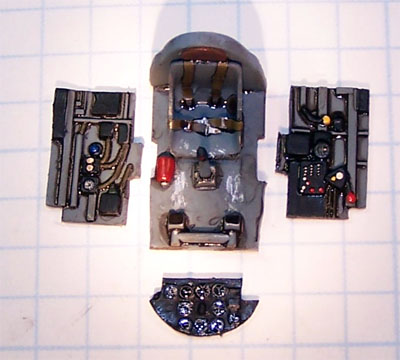
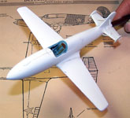
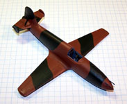
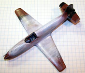

{kind=link}
{kind=link}
{kind=link}
{kind=link}
{kind=link}
{kind=link}
{kind=link}
{kind=link}
{kind=link}
{kind=link}
{kind=link}
{kind=link}


Bereznyak-Ishaev B1 Rocket Interceptor

Kit #4848
MSRP $21.95
Images and text Copyright © 2005 by Matt Swan
Developmental Background
Under the direction of Professor Victor Bolkhovitinov, head of the OKB Bolkhovitinov (aircraft design bureau), Alexander Yakovlevich Bereznyak and Alexei Mikhailovich Isayev designed the B1 which was to be the first rocket powered aircraft to ever fly in the USSR. By the spring of 1941 the technical plans had been completed. Stalin gave the project his approval on July 9, 1941 and the first prototype was completed just 35 days later. The aircraft was of wooden construction with a molded plywood skin and a cantilever low-wing designed to facilitate mass production. It was powered by a Dushkin-Isayev D-1A-1100 liquid rocket motor fueled by aviation-grade kerosene and nitric acid, a very dangerous and corrosive mix. The corrosive aspect of the fuel ate at the aircrafts tanks and fuel lines causing considerable delay in the aircraft’s production. This engine could provide approximately 2 minutes of sustained thrust that pushed the craft to about 10,000 meters and a speed of 990 kpm. Once the engine exhausted its fuel the craft became a high-speed glider getting a single opportunity to bring its two 20mm cannons to bear on an enemy aircraft before returning to land on either a wheeled undercarriage or skies.
The B1-1 was first flown as a glider on September 10, 1941. The first powered flight occurred on May 15, 1942 with the B1-2. The B1-3 continued the flight test program and 50 aircraft were ordered into production. After the seventh flight the B1-3 was lost due to uncontrollable nose down pitch. Shortly after this event the production order was canceled but flight testing continued until 1945 with a total of seven prototype aircraft being constructed.
The Kit


This is a vacuform kit manufactured by Sierra Scale in Louisville, Kentucky. Many of you may not be familiar with this brand but they have been churning out a nice selection of vacuform and resin aircraft kits in 1/72 and 1/48 since 1987 and was ogininally based in Northern California. Before Classic Airframes began the development of the Barracuda these were the only folks that made a good quality kit of the type. The Barracuda by the way was the last new kit they produced and that was in 1997. This kit (the B1) comes in a large zip-lock bag containing a single large sheet of vacuform parts formed in .040 white polystyrene. This sheet covers the primary exterior pieces and appears to be made using good quality cavity molds. The main panel lines are provided with good recessed detail but several secondary panel lines are missing. Also included here are the pilot’s seat and a rocket motor tube. Taped inside the fuselage are two vacuformed canopies. It’s nice to have a back-up canopy just in case and also if you want to open the cockpit up you have a little more knife flexibility. The canopies are nicely clear but the frame lines are very soft. So far we have twelve white Vac pieces and two canopy pieces.
Also included in the large zip-lock bag is a small bag of resin goodies. Here we have side wall pieces for the cockpit, floor-pan, bulkhead, gear struts, wheels, elevators, skies and stabilizer pieces. These are all cast in an off-white resin that appears fairly hard. There is a lot of mold seam flash on the parts but the general level of detail looks to be very nice. I think after some clean-up work these will be some very impressive pieces. Now there is a disclosure that the cockpit interior detail is mostly guesswork but it does look fairly busy and there is no pictorial documentation to trip you up later. We have a total of seventeen resin pieces bringing the total kit parts count to twenty nine. Oh yeah, don’t forget that you can click on the small images of the parts above to view larger pictures.
Decals and Instructions
Sorry campers, no decals with this kit. You’ll need to head to your spares box or pick up some generic aftermarket Russian decals. Instructions come on a single A4 size sheet of paper. This includes a short historical background of the aircraft and several assembly notes covering the primary construction aspects. There are two line drawings that cover basic cockpit parts placement and some landing gear bay construction tips. The flip side of the page contains a three view drawing of the aircraft with marking instructions and painting instructions for unit B1-3. The instructions show four tail braces but these parts do not seem to be included in the kit – guess those need to be scratch built.
Conclusions
Okay, I’m a sucker for the esoteric and I don’t think you can get more esoteric than this. Not only that, but this is the only kit of this aircraft in 1/48 that I am aware of. I think Academy did an injection molded one in 1/72 and that is about it for the Bereznyak B1. There is nothing on the aftermarket for this kit. This kit is for advanced modelers, you can build it as it comes from the bag and get an award winning model but for those of us with AMS some panel line scribing and scratch building will be required and of course you’ll need to bring your own decals to the party. If you like odd little developmental aircraft then you’ll most definitely want to get a hold of one of these.
8/27/06
Construction
I had just completed a series of very long builds and was looking for something quick and easy to work on when I thought of this kit. Generally speaking one does not relate the term “a quick build” or “easy” with a vacuform kit. This kit is an exception, I spent about two hours scoring and snapping free the primary parts from the vac sheet and getting them sanded to shape. Yet another hour was spent trimming the soft injection molded plastic detail pieces for the cockpit. Little is known about the interior of the B-1 so some liberties can be taken here. I selected Pru Blue for my basic interior color and coated all pieces then detailed the interior boxes with Flat Black enamel, some red and yellow along with a selection of Mike Grant instrument decals.

The kit vacuformed pilot seat did not include any seat belts so I stole a set left over from an old MPM Tupolev build so at least they kept the Russian flavor. Once the decals had dried down from an application of Micro-Sol I spotted each one with some Future floor polish to simulate glass lenses. The alignment notches for the sidewalls took a lot of trim work to get a good fit. Once these pieces were all together I test fit them to the fuselage and found the whole assembly was just a little too wide for a good fit. Using my Dremel with a large sanding drum attached I ground the outside of the cockpit and the floor until I had a good fit. The cockpit was glued into the fuselage and the fuselage pieces were glued together. This pretty much wrapped up the first day of modeling.
Next day I assembled the wings and attached them to the fuselage. The tail planes needed lots of trim work before they fit and same with the outboard stabilizers. The little elevator braces were scratch built from some Evergreen sheet. A check of the wing alignment showed some twist and I had to insert a small shim in the wing root of one side to straighten things out, an application of putty to the seams and she sits overnight to dry.
The next couple sessions of modeling were spent sanding filler and double checking seams. I drilled out the openings for the 20mm cannons and inserted some brass tubing there. The cockpit was stuffed with tissue paper and she was ready for some paint. RLM-65 was used for the lower color followed by Military brown on top. After this had dried I masked off the camouflage pattern and used some dark green to finish the pattern. The masks were removed and the model was sealed with Future. Next some Ceramcoat Flat White was brushed over the central section of the aircraft. Before it had a chance to dry I took a folded section of paper towel, dipped it in water and started wiping the white working from front to back. My theory here is that the winter distemper was applied quickly with large brushes or brooms and I wanted to duplicate this effect. Another coat of Future and the panel lines are treated with sludge wash.



You can click on any of these small images to view larger pictures. Decals were salvaged from the spares box and are mostly old ICM markings. The kit comes with a choice of either skies or wheels and I chose skies. Again more heavy duty trimming was needed on these pieces and the gear struts before they could be painted and attached. The gear doors were removed from the vac sheet and painted. The canopy was masked off which was no easy chore as the frame lines are very soft. At least the plastic had good clarity. Once the masking was done I placed the part over a master blank that is included on the vac sheet and cut the front wind screen free of the back canopy section. Each piece was then airbrushed with interior color, exterior color then a light dusting of white.
While the canopy was drying I attached the skies and applied some wash to them. The model was then sealed with some Polly Scale Clear Flat. The canopy sections were attached with some Testors Clear Parts cement and some cable retainers were added to the ski tips using invisible thread painted black. Overall this build took one week, Sunday to Sunday but two of those days no modeling happened and I did work a full time job in between along with moving my daughter to a college dorm. This was indeed a fun, quick and easy build. The completed aircraft is actually smaller than a Me-109 and in one of the pictures below it is staged with a Yak 7 just to show how tiny it really is.